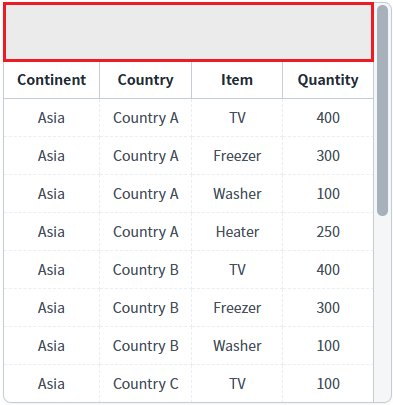
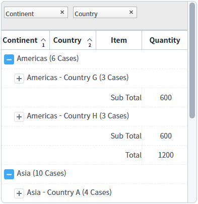
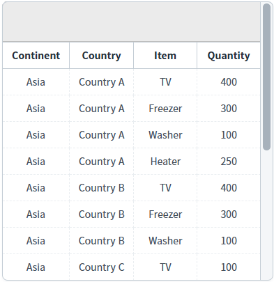
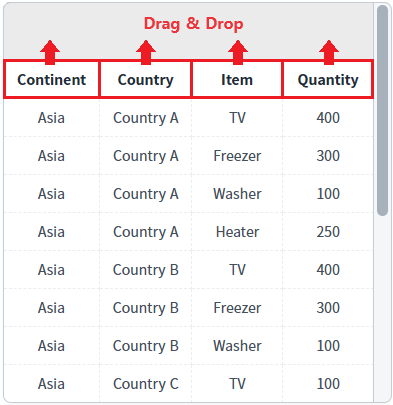
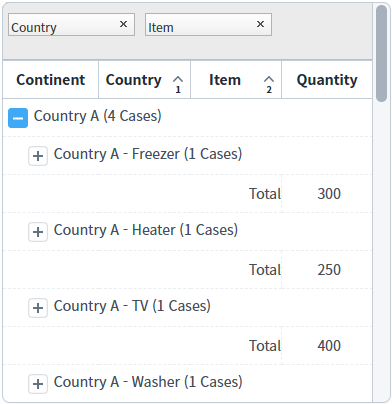
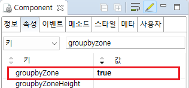
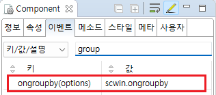

그룹핑 기능을 사용하면 한 개 이상의 컬럼을 기준으로 GridView의 데이터를 그룹으로 분류하고, 각 그룹에 대한 통계 값을 확인할 수 있습니다. 이 예제는 GridView의 'ongroupby' 이벤트를 이용한 방법과 메소드를 이용해 적용하는 방법, 두가지를 모두 적용한 예제 입니다. 'ongroupby' 이벤트는 드래그 동작이 필요해 모바일에는 사용할 수 없지만 이벤트나 메소드를 활용한 방법으로 구현 가능합니다.
groupby 메소드를 사용하여 Grouping하기
ongroupby 이벤트를 사용하여 Grouping 하기
clearGroup 메소드를 사용하여 Grouping 해제하기
예제 영역 'Grouping'에 구성된 GridView에서 테스트합니다.1
STEP 1: 초기 상태 확인하기
GridView의 groupbyZone 속성이 'true'로 설정되어 상단에 groupbyZone이 표시됩니다.
Image 1.브라우저(Chrome) 실행 예시

2
STEP 2: Groupby 실행하기
'Groupby' 버튼을 클릭합니다.
3
STEP 3: 실행 결과를 확인합니다.
Groupby가 적용되어 통계 결과가 나오는 것을 확인할 수 있습니다.
Image 2.브라우저(Chrome) 실행 예시

4
STEP 4: Groupby 해제하기
'ClearGroupby' 버튼을 클릭합니다.
5
STEP 5: 실행 결과를 확인합니다.
Groupby가 해제되어 초기의 GridView로 표시됩니다.
Image 3.브라우저(Chrome) 실행 예시

6
STEP 6: Groupby 실행하기
Gridview의 컬럼을 GridView 상단의 groupbyZone에 드래그 앤 드롭합니다.
Image 4.브라우저(Chrome) 실행 예시

7
STEP 7: 실행 결과를 확인합니다.
Groupby가 적용되어 통계 결과가 나오는 것을 확인할 수 있습니다. 아래의 이미지는 "Country"와 "Item"을 순서대로 드래그 앤 드롭한 결과입니다.
Image 5.브라우저(Chrome) 실행 예시

1
GridView의 'groupby' 메소드를 사용하여 스크립트를 작성합니다.
Example 1.Script
// groupby에서 사용할 옵션 객체 var options = { sortIndex: [0, 1], // 기준 컬럼 index (0번, 1번) sortOrder : [1, 1], // 컬럼의 정렬을 지정 (-1: 내림차순, 1: 오름차순) closeGroup: true, // groupby 된 데이터의 숨김 상태 여부 groupbyHeader: [ // 전체 건수를 헤더에 표현하는 방식 설정 { // expression 그룹핑 컬럼 데이터를 계산식으로 표현 inputType: "expression", // 표현식 : 토글버튼, 컬럼에 속한 값, 데이터 건수 표시 expression: 'toggle() + depthStr() + " (" + count() + " Cases)"', align: "left", colSpan: "4" } ], groupbyFooter: { // 1단, 2단까지 표현 형식을 지정 depth_0: [ //1단 Footer 내용 { colSpan: "3", value: "Total", align: "right" }, // col4의 총 합 { inputType: "expression", expression: 'SUM("col4")' } ], depth_1: [ //2단 Footer 내용 { colSpan: "3", value: "Sub Total", align: "right" }, // col4의 총 합 { inputType: "expression", expression: 'SUM("col4")' } ] } }; //GridView 'grd'에 groupby 실행 grd.groupby(options);
1
STEP 1: GridVIew의 groupbyZone 속성을 true로 설정합니다.
[필수] groupbyZone="true" // groupbyZone 활성화
Image 6.웹스퀘어 스튜디오의 Component View - 속성 설정 예시

2
STEP 2: GridVIew의 ongroupby 이벤트를 설정합니다.
GridView에 ongroupby 이벤트를 "scwin.ongroupby"로 설정합니다.
Image 7.웹스퀘어 스튜디오의 Component View - 이벤트 설정 예시

Example 2.Source
<!-- Grouping 의 소스 본문 예시 - GridView 설정 --> <w2:gridView ev:ongroupby="scwin.ongroupby" groupbyZone="true" id="grd"> // 중간 생략 </w2:gridView>
3
STEP 3: 이벤트 메소드 내부에 Groupby의 옵션을 정의하고 "GridView"의 "groupby()"실행합니다.
Example 3.Script
scwin.ongroupby = function (options) { // groupby에서 사용할 옵션 객체 options.closeGroup = true; // groupby 된 데이터의 숨김 상태 여부 options.groupbyHeader = [ // 전체 건수를 헤더에 표현하는 방식 설정 { colSpan: "4", inputType: "expression", expression: 'toggle() + depthStr() + " (" + count() + " Cases)"', align: "left", colSpan: "4" } ]; options.groupbyFooter = [ // 단계별 지정이 아닌 한가지로 표현 { colSpan: "3", value: "Total", align: "right" }, { colSpan: "1", inputType: "expression", expression: 'SUM("col4")' } ]; //그룹핑 시작 grd.groupby(options); }
1
GridView의 "clearGroupby"를 실행합니다.
Example 4.Script
grd.clearGroupby();
1
STEP 1: groupby에 사용할 메소드 혹은 ongropby 이벤트를 정의합니다.
(구현 예시 4.1, 4.2를 참고하세요.)
2
STEP 2: 메소드 groupby에 전달하는 options 객체에 표현할 header 혹은 footer에 inputType을 expression으로 설정합니다.
Example 5.Script
// 전체 건수를 헤더에 표현하는 방식 설정 options.groupbyHeader = [ { colSpan: "4", inputType: "expression", expression: 'toggle() + depthStr() + " (" + count() + " Cases)"', align: "left", colSpan: "4" } ];
Example 6.Script
// 단계별 지정이 아닌 한가지로 표현 options.groupbyFooter = [ { colSpan: "3", value: "Total", align: "right" }, { colSpan: "1", inputType: "expression", expression: 'SUM("col4")' } ];
groupby(options)
options.closeGroup
options.row/umHeader
options.rowNumFooter
options.rowStatusHeader
options.rowStatusFooter
options.groupbyHeader options.groupbyFooter
options.showOnlyLastDeoth
options.sortindex
options.sortOrder
options.hideHeader
options.hideFooter
ongroupby(options)
options.closeGroup
options.row/umHeader
options.rowNumFooter
options.rowStatusHeader
options.rowStatusFooter
options.groupbyHeader options.groupbyFooter
options.showOnlyLastDeoth
options.sortindex
options.sortOrder
options.hideHeader
options.hideFooter